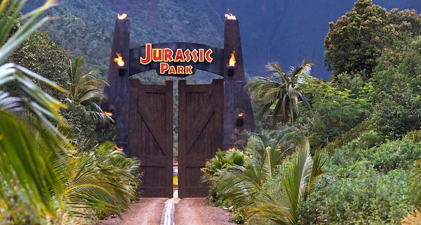

Jurassic Park
Welcome to... Jurassic Park!
Humans waited 65 million years for cloning technology to be advanced enough to re-create dinosaurs from DNA found in mosquitoes preserved in amber. If that's the timeline, the 29 years between Jurassic Park, the first film in the franchise, and the latest Jurassic World: Dominion doesn't seem all that long. But spreading six movies out across three decades does make it easy to lose track of exactly what happens in one or two along the way.
Fortunately, the Jurassic Park movies are already in chronological order, so you just watch them in order of release.